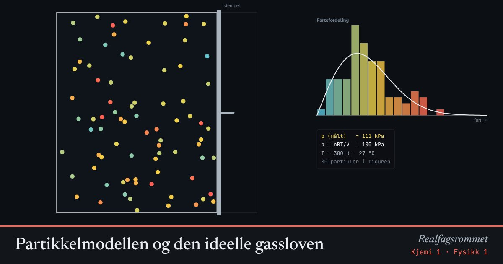

Partikkelmodellen og den ideelle gassloven
Trykket er summen av alle støtene mot veggene. Flere partikler, høyere temperatur eller mindre volum gir flere og hardere støt.
Start animasjonen
Formler
Om animasjonen
Hver prikk er et molekyl. Fargen viser farten: blå er langsom, rød er rask. Høyere temperatur betyr større gjennomsnittsfart.
Trykket måles ved å telle støtene mot veggene. Den målte verdien svinger litt rundt verdien fra den ideelle gassloven.
Histogrammet viser fartsfordelingen. Molekylene har ikke samme fart. Kurven er Maxwell–Boltzmann-fordelingen for en gass i to dimensjoner.
Hold temperaturen fast og halver volumet: trykket dobles (Boyles lov).
Prøv dette
- Doble temperaturen i kelvin. Hva skjer med trykket?
- Hold trykket konstant: hvordan må volumet endres når temperaturen øker?
- Hvorfor må vi bruke kelvin og ikke celsius i gassloven?
- Regn ut trykket når 0,10 mol gass har volum 2,0 L ved 300 K.
Kompetansemål
- Fysikk 1: Temperatur, varme og temperaturendring
- Kjemi 1: Gasser og partikkelmodellen
Mer om energi, varme og svingninger
- Energibevaring: stilling, fart og varme
- Energiomforming og virkningsgrad
- Temperatur og varme: is blir til damp
- Spesifikk varmekapasitet: varmt og kaldt blandes
- Fjær og harmonisk svingning
- Energikvalitet: varmepumpe og panelovn
- Vindkraft: hvor mye energi er det i vinden?
- Strømforsyning: vind, sol, vann og gass